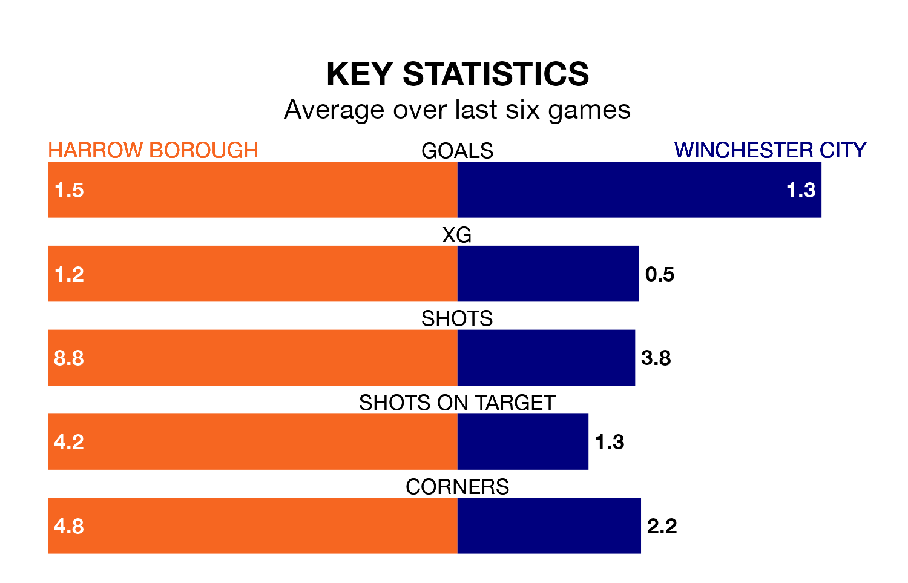

Struggling Harrow Borough face Winchester City at the Earlsmead Stadium on Saturday looking to build on a win in their last league outing.
After securing all three points with a 3-1 victory over Swindon Supermarine on February 17, Harrow sit bottom of the Southern League Premier South.
They travel to play a Winchester side 10th in the standings, who were held in their last match, 1-1 against Hanwell Town.
With 39 goals in 30 games so far this season, Harrow are scoring at below the league average rate with 1.3 goals per game. And they are conceding more than average, letting in 68 goals at a rate of 2.3 per game.
Winchester are also below average scorers, with 1.6 goals per game, compared to a league average of 1.7. They have conceded 1.7 goals per game.
In the last three years, Harrow and Winchester have played each other on three occasions. Harrow won one of them and they drew the other.
Their last meeting was on October 21, when Harrow won 2-1 away.
Borough are in mixed form in the Southern League Premier South, with two wins and two draws from their last six games.
And also with two wins and two draws over that period, City's form is identical – they have both taken eight points from 18.
Updated: 10:08 (UTC), 23/02/24